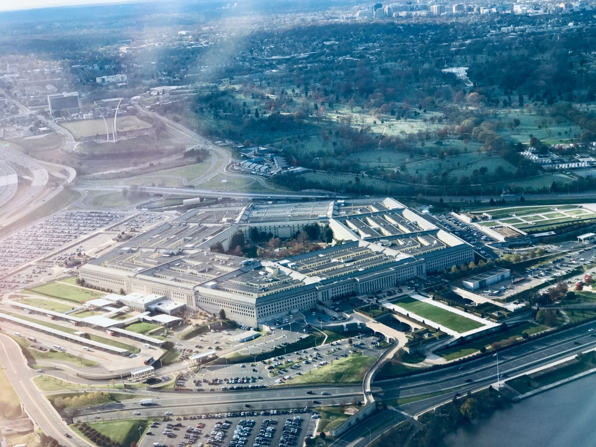
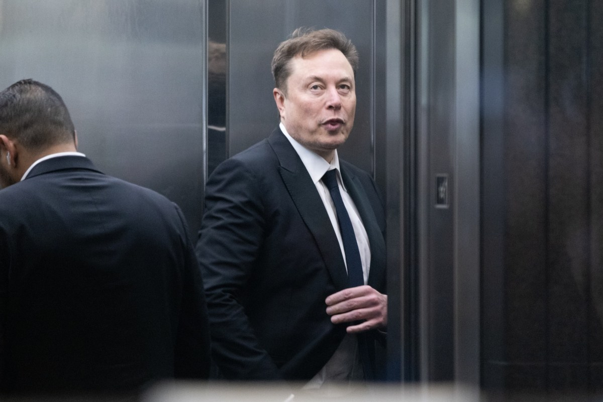
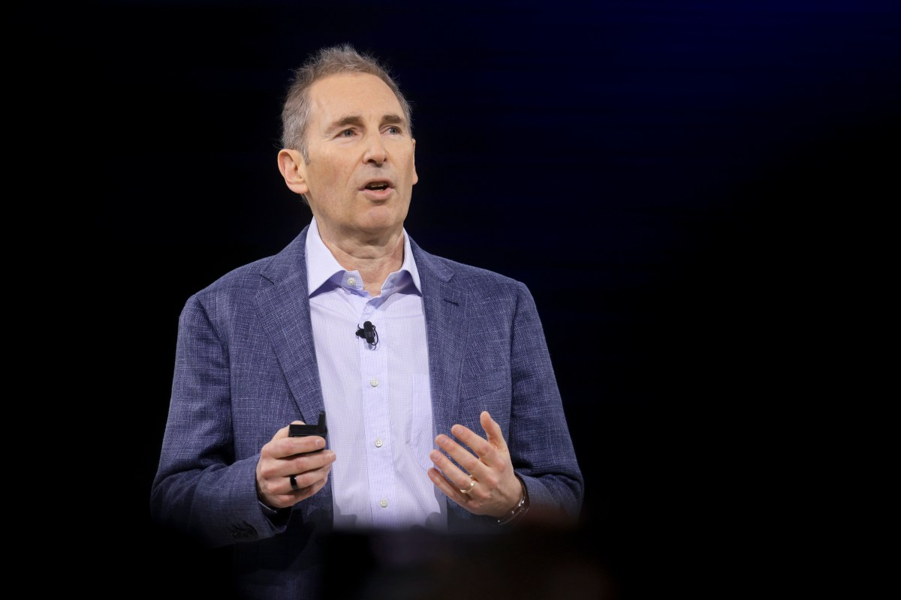

編輯註：今日 inbox 候選原本含 5 條，其中 OpenAI Cyber 白名單與 Anthropic 900B 估值兩條已在昨日（5/1 · N°29、N°30）完整覆蓋，本期不重複處理；今天聚焦「政府訂單分散 × 蒸餾紅線 × 算力第二曲線」三條尚未上桌的訊號。

Pin · DoD 把雞蛋從 Anthropic 一個籃子，拿出來分到 Nvidia、Microsoft、AWS 三邊。
TechCrunch 揭露美國國防部（Department of Defense, DoD）在過去一週連簽多筆協議，把前沿 AI 模型部署到機密網路（classified networks）上。對外列名的承接方包含 Nvidia、Microsoft、AWS，文章亦提到 Google 與 SpaceX 屬於同一波多供應商評估範圍。報導同時點名這批合約的時序，緊跟在 Anthropic 與 DoD 為 Claude 使用條款（ToS）翻臉之後——先前 Anthropic 拒絕放寬政府軍事使用條款，DoD 短期內無法把 Claude 放上戰術或情報線上的核心 stack。
於是 DoD 把計畫改寫為「多供應商分散採購」：同樣的工作負載不再集中壓在單一前沿模型廠，而是同時在 Nvidia 的硬體+CUDA 生態、Microsoft Azure Government、AWS GovCloud 三條線上建置；Google 與 SpaceX 則在第二批名單裡持續評估。從合約結構看，這次的承接 stack 不再以「哪一家的 frontier 權重最強」為唯一賣點，而是強調 sovereignty（部署可控）、telemetry（可稽核）、ToS（軍方可改）三條治理屬性。
對 Anthropic 而言，更微妙的是這同一週政治面的雙重訊號：5/1 那波 N°29 已盤點過 Cyber 模型 access gating 業界標準化；今天 N°33 等於把同一條治理需求放到「政府實際採購選擇」上演一次。Cyber 上鎖在 PR 上是進步，但在訂單上要付代價。
第一，前沿模型廠的政府話語權正在被稀釋。過去 18 個月，前沿 lab 對美國政府部門的單點壓注，是它們估值故事中「政治護城河」這一段的主要支柱。DoD 這一手等於把「frontier-only」這條敘事打回原形：美國軍方就算只用次一級的能力，也願意換掉條款不利的供應商。
第二，雲端三巨頭重新拿回 AI 帳單上的位置。Nvidia 賣的是硬體加生態，Microsoft 賣 Azure Government 加自家 MAI 線、AWS 賣 GovCloud 加 Bedrock。這三條 stack 都不需要靠任何單一前沿模型的權重就能成案，DoD 訂單成了它們對 frontier lab 「我們不只是通路」的展示舞台。對 Microsoft 而言更是雙倍利多——Copilot for Government 從「OpenAI 套殼」升級為「跨模型 platform」，本來就是它今年 narrative 的主軸。
第三，dual-use 條款的議價權回到客戶端。Anthropic 因為條款不肯讓步而失去訂單，這個案例會被所有大型政府客戶拿去當談判籌碼——「前沿廠商不肯改 ToS？我們可以走多供應商」會變成 RFP 模板的預設語句。歐洲與中東主權雲市場下個季度的 RFP 內，這條應該會被直接抄寫進去。
三個看點：
(1) Anthropic 的下一個對外信號會是「條款彈性化」。不是放棄安全立場，而是針對政府客戶切出一條 carve-out 線。否則 DoD 這個 reference 會持續被同業引用，配上昨天剛揭露的 900B+ 估值新一輪募資（5/1 · N°29），對外故事的政治面與資本面落差會被放大。
(2) Microsoft 在政府線上的 narrative 會從「Copilot for Government」升級為「跨模型 platform for Government」。下一個重要 milestone 會是 Azure Foundry 政府版同時接 OpenAI、自家 MAI 與第三方權重模型。對 Microsoft Federal 銷售團隊來說，這條 narrative 的彈藥從這週開始才正式上膛。
(3) Nvidia 的軟體層故事會被進一步放大。不只是 GPU，而是 CUDA、NIM、AI Enterprise 整套被當作「主權 AI stack」賣給機密網路。Nvidia 在 frontier model 上的中立性，正是它這一刻吃到 DoD 訂單的關鍵——這條中立性會變成 Nvidia 對 hyperscaler 議價時的另一張牌。

Pin · 蒸餾防火牆從 ToS 細則被一句證詞拉到產業最頂層議題。
TechCrunch 報導，Elon Musk 在 Musk v. Altman 案的庭審證詞中，當庭承認 xAI 在訓練 Grok 系列模型時，曾使用 OpenAI 模型的輸出做 distillation（蒸餾）。Musk 的說法把這件事框成業界普遍做法、且自己創辦 xAI 是被 OpenAI 商業化轉向「逼出來」的；OpenAI 法務團隊則在後續陳述中強調這正是其 Terms of Service（ToS）反覆禁止的行為。
Distillation 是用大模型生成的回應作為訓練樣本，去訓練自家較小的模型，使其在特定任務上接近大模型的表現。對 OpenAI、Anthropic 這些前沿廠來說，這條 surface 一直是他們護城河外牆的關鍵磚——所以從 ChatGPT API ToS、Claude API ToS 都明文禁止「用我們的輸出訓練你自己的競爭模型」。實務上，這條規則是「半默認執行」狀態：廠商之間互相心知肚明、官司打不太起來，靠 API 限速、輸出指紋、條款驅趕做防守。
TechCrunch 同步推出影片〈Musk v. Altman is just getting started〉與 podcast，把這條法庭線跟 OpenAI 的非營利轉營利、Musk 對 OpenAI 的長期訴訟一起串成連續報導。對外輿論場一夜之間把「xAI 是不是踩了紅線」這個原本內部討論話題，變成 frontier 廠的公共議題。
第一，distillation 紅線從 ToS 文件被拉到法庭議題。過去這條規則停留在合約層，廠商之間互相心知肚明、半默認執行。Musk 一旦在公開法庭承認這個操作，後續 OpenAI、Anthropic 在 ToS、API 限速、輸出指紋、抗蒸餾防禦的工程化投入只會升級。對 Anthropic、OpenAI 法務團隊來說，這是一個過去想拿但拿不到的證據樣本。
第二，frontier 廠對 API 反向工程的對策會工程化、自動化。輸出指紋（output fingerprinting）、長上下文洩漏偵測、跨帳號 query pattern 分析、輸出內容嵌入式 watermark 等這些「reactive」工具會被推到 GA，進一步壓低小廠用大廠 API 偷蒸餾的單位經濟性。Helicone、LangSmith 這類觀測平台短期內會被迫加入「反蒸餾偵測」這條主線。
第三，新興 lab 的訓練資料合規披露壓力會升高。下一輪募資與企業合約裡，「我家模型沒有蒸餾自前沿大廠」會變成必要承諾條款，否則就要承擔合約違約與訴訟風險。這條條款會直接寫進 LP side letter 與 enterprise procurement template 之中。
三個看點：
(1) OpenAI 與 Anthropic 會把抗蒸餾預算列入 next-cycle 工程 roadmap。從 API gate、輸出 watermark、行為偵測一條龍。下一代 ChatGPT API 與 Claude API 預計會引入隱形 watermark 與更積極的速率/帳號族分析。
(2) xAI 的對外形象會被「開源派」與「合規派」拉鋸切割。一邊被當作擾動 frontier 雙頭的破局者；另一邊被視為踩了 ToS 紅線的反派。Musk 的政治品牌會繼續加深這個分裂——而 xAI 在企業 enterprise sales 端會明顯感受到法務 friction。
(3) 開源、合成資料 stack 會被推到聚光燈下。「不想踩蒸餾紅線」的廠商會把訓練資料替換成 open-license 與自家 simulator-generated 來源，合成資料 vendor 接下來 6 個月是個熱鬧角落。Synthesia、Gretel、Tonic 這類 synthetic data 廠商的話術會出現「合規敘事」這一條新主線。

Pin · Nvidia ramp 之外，正在成形第二條獨立的算力供給曲線。
Ben Thompson 在 Stratechery 對 Amazon Q1 財報做了長段拆解：AWS 雲端營收 YoY 成長率重新加速、capex 仍在加碼、其中相當比例押在自研晶片 Trainium 與多年期 GPU/ASIC 預租產能。Thompson 把這條故事框成「AI 算力商品化（commoditization）」的關鍵階段——AWS 用 Trainium 自家晶片＋ASIC 預租＋Bedrock 業務 stack 的綜合體，把 frontier 訓練與推論的單位成本曲線從 Nvidia 一條主曲線，撐出第二條獨立的供給曲線。
TechCrunch 同期報導 cross-confirm 這個趨勢：Amazon 雲端業務暴衝、capital spending 同步暴衝。AWS 的 Inferentia 與 Trainium 兩條自研晶片線，正在內部承擔越來越大比例的 AI workload，部分前沿客戶也已開始把 inference 工作負載從 H100/H200 集群遷向 Trainium2 集群以做成本對沖。Thompson 的關鍵 framing 是：AI 算力的長期均衡價格，會由「最便宜的可用 stack」決定，而不是由 Nvidia 旗艦產品的 ramp 速度決定——這是一個從 supply curve 角度重新建模的 thesis。
對 frontier lab 來說，這條第二曲線的存在改變了多雲布局的邏輯：OpenAI 已在 Microsoft、AWS、Oracle 多邊布局；Anthropic 在 AWS、Google 雙邊；下一個受益於這條商品化曲線的會是 Tier-2 lab——Mistral、Cohere、Reka 與一批 RL 新貴，可以靠 Trainium/TPU 起家，把訓練單位成本壓到旗艦 lab 級。
第一，Nvidia 一家獨大的 GPU 議價時代會被多 ASIC 結構切薄。Trainium、TPU、MI300/MI400、Maia、各家 startup ASIC 同時存在，並各自被某一朵雲收編成 stack 內標配。買方（前沿廠、enterprise）的議價空間從「下一批 H 系列幾顆」變成「我能不能多 stack 並行」。Nvidia 的反應一定是把軟體層綁定推得更深——CUDA、NIM、AI Enterprise 是它對抗 ASIC 商品化的最強護城河。
第二，frontier lab 的算力供給結構從垂直變水平。OpenAI、Anthropic 過去仰賴單一 hyperscaler 鎖定大批產能，未來會被迫把同一個 workload 在不同晶片 stack 上能跑，這倒過來壓低 Nvidia 鎖定效應。對 Anthropic 來說，這意味著 5/1 · N°29 報導的 900B+ 估值新一輪內，term sheet 必然會把「多 stack 算力承諾」寫進 LP 保護條款。
第三，capex 仍在加碼意味著資本市場下注沒有見頂。當 Amazon、Microsoft、Google、Meta 同時把 AI capex 推到歷史高位，公開市場對 AI 基礎建設的多頭仍未轉向。AI 周期的拐點不會出現在 capex 曲線本身，而會先出現在 enterprise revenue 是否跟得上——這是接下來 6 個月最值得追的單一指標。
三個看點：
(1) Trainium 的客戶名單會在下個季報期被當作獨立指標看。Anthropic、Stability、Cohere 之外，能不能再添一個一線 frontier 客戶，是 AWS 算力商品化故事的下一個錨點。AWS 內部對「flagship customer announcement」的時機壓力會明顯上升。
(2) Nvidia 的對應策略會繼續往「軟體層綁定」推進。CUDA、NIM、AI Enterprise 這條 stack 是它對抗 ASIC 商品化的最強護城河——硬體被切薄沒關係，軟體層越深，客戶替換成本越高。Nvidia 對 enterprise 銷售的下一個季度敘事會明顯偏向 platform。
(3) 「多 stack」也是 enterprise 採購話術新預設。大型 enterprise IT 採購條款會內含「至少支援 2 種 AI 算力 stack」的可移植性條款，把垂直鎖定當風險評估。Procurement 端的 RFP 模板會把這條當必選題寫死。
編輯台 · 等 Rick 審完 Status 切 ready · publish skill 接手 07:00 上線。